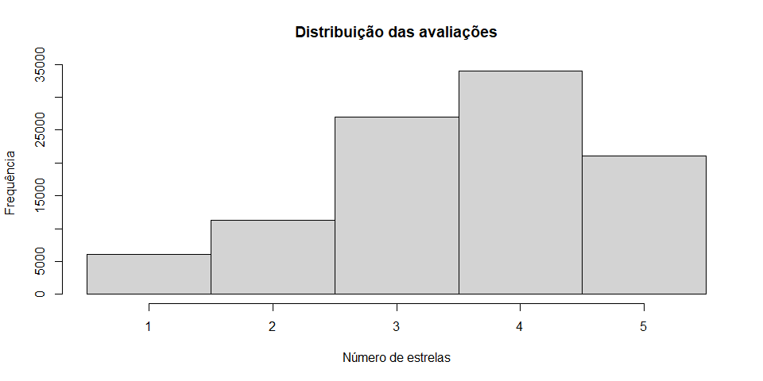
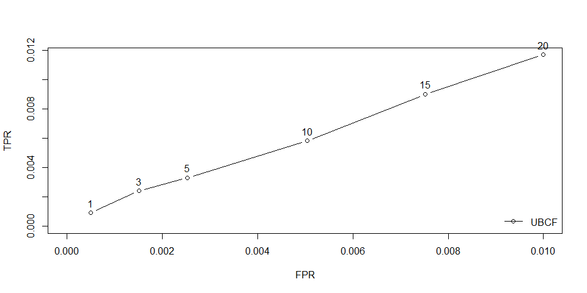
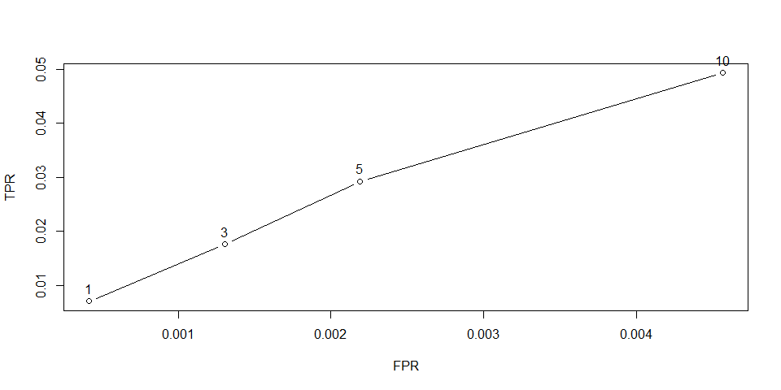
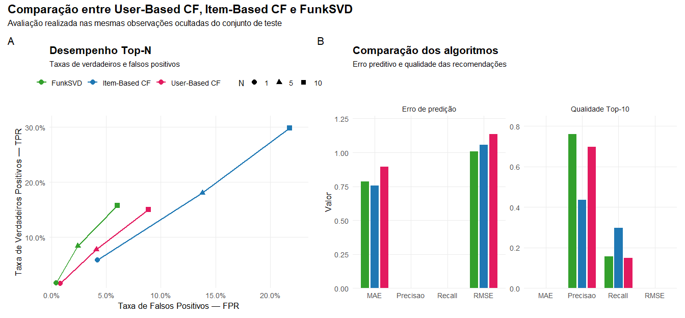

943 x 1664 rating matrix of class 'realRatingMatrix' with 99392 ratings.Parte III : Aprendizado não supervisionado
Sistemas de Recomendação
Sistemas de Recomendação
O que é um sistema de recomendação?
Um sistema de recomendação é um algoritmo capaz de sugerir itens que sejam potencialmente relevantes para cada usuário.
Os itens recomendados podem ser:
- filmes;
- músicas;
- livros;
- produtos;
- notícias;
- restaurantes;
- cursos;
- vídeos.
O objetivo é identificar automaticamente itens de maior interesse para cada usuário, utilizando informações sobre seu comportamento ou suas preferências.

Aplicações
Sistemas de recomendação estão presentes no cotidiano
Diversas plataformas utilizam algoritmos de recomendação para personalizar a experiência do usuário.
Exemplos incluem:
- Netflix
- Amazon
- Spotify
- YouTube
- TikTok
- Mercado Livre
- iFood
Em muitas empresas, os sistemas de recomendação representam uma das principais ferramentas para aumentar o engajamento dos usuários e impulsionar vendas.

Abordagens
Como um sistema decide o que recomendar?
Existem três estratégias principais para construir sistemas de recomendação.
| Abordagem | Ideia principal |
|---|---|
| Baseada em conteúdo | recomenda itens semelhantes aos já apreciados pelo usuário. |
| Filtragem colaborativa | recomenda itens apreciados por usuários com preferências semelhantes. |
| Sistemas híbridos | combinam múltiplas estratégias para melhorar a qualidade das recomendações. |
Neste capítulo estudaremos a filtragem colaborativa, uma das abordagens mais utilizadas em plataformas de recomendação.

Filtragem colaborativa
A hipótese da filtragem colaborativa é simples:
Usuários que apresentaram comportamentos semelhantes no passado tendem a possuir preferências semelhantes no futuro.
Assim, um sistema pode recomendar a um usuário itens que foram bem avaliados por outros usuários com gostos parecidos.
As recomendações são construídas a partir do comportamento coletivo dos usuários, e não das características dos produtos.

Representação dos dados
Matriz usuário × item
Toda técnica de filtragem colaborativa parte de uma matriz de avaliações.
Cada linha representa um usuário.
Cada coluna representa um item.
Cada célula corresponde à avaliação atribuída pelo usuário ao item.
Representação dos dados
Matriz usuário × item
| Usuário | Filme A | Filme B | Filme C | Filme D |
|---|---|---|---|---|
| U1 | ★★★★★ | ★★★★☆ | — | ★★★★★ |
| U2 | ★★★★☆ | ★★★★★ | ★★★☆☆ | — |
| U3 | — | ★★★☆☆ | ★★★★★ | ★★★★☆ |
| U4 | ★★★★★ | — | ★★★★☆ | ★★★★★ |
As células vazias representam itens que ainda não foram avaliados e que poderão ser recomendados futuramente.
O desafio
A matriz é extremamente esparsa
Na prática, cada usuário avalia apenas uma pequena fração dos itens disponíveis.
Consequentemente, a maior parte da matriz permanece vazia.
O principal desafio dos sistemas de recomendação é prever corretamente os valores ausentes da matriz.

Pergunta central
Como prever uma avaliação desconhecida?
Considere a seguinte situação:
- João avaliou diversos filmes.
- Ainda não assistiu ao Filme D.
Como estimar a nota que João provavelmente atribuiria a esse filme?
Pergunta central
Como prever uma avaliação desconhecida?
A estratégia da filtragem colaborativa baseada no usuário consiste em:
- encontrar usuários semelhantes a João;
- observar como esses usuários avaliaram o Filme D;
- utilizar essas avaliações para estimar a nota de João.
A recomendação é baseada na similaridade entre usuários.

User-Based Collaborative Filtering
User-Based Collaborative Filtering
O que significa “usuários semelhantes”?
Na filtragem colaborativa baseada no usuário, o primeiro passo é identificar usuários com padrões de avaliação semelhantes.
Por exemplo:
| Filme | João | Maria | Pedro |
|---|---|---|---|
| A | ★★★★★ | ★★★★★ | ★★☆☆☆ |
| B | ★★★★☆ | ★★★★☆ | ★☆☆☆☆ |
| C | ★★★★★ | ★★★★★ | ★★☆☆☆ |
| D | ? | ★★★★★ | ★☆☆☆☆ |
João e Maria apresentam avaliações muito semelhantes para os filmes já assistidos.
User-Based Collaborative Filtering
O que significa “usuários semelhantes”?
Assim, a avaliação de Maria para o Filme D pode ser utilizada para estimar a avaliação de João.
A similaridade é calculada apenas utilizando os itens avaliados em comum pelos usuários.

User-Based Collaborative Filtering
Medindo a similaridade entre usuários
Diversas medidas podem ser utilizadas para comparar dois usuários.
As mais comuns são:
- Similaridade do cosseno
- Correlação de Pearson
Cada medida transforma as avaliações dos usuários em um valor de similaridade, geralmente compreendido entre −1 e 1 ou entre 0 e 1, dependendo da métrica utilizada.
Quanto maior a similaridade, maior será a influência daquele usuário na recomendação.
Similaridade do Cosseno
A similaridade do cosseno mede o ângulo entre os vetores de avaliações de dois usuários.
\[ \operatorname{sim}(u,v)= \frac{ \sum_{i\in I_{uv}} r_{ui}\,r_{vi} }{ \sqrt{\sum_{i\in I_{uv}} r_{ui}^{2}} \sqrt{\sum_{i\in I_{uv}} r_{vi}^{2}} } \]
onde:
- \(r_{ui}\): avaliação do usuário \(u\) para o item \(i\);
- \(r_{vi}\): avaliação do usuário \(v\);
- \(I_{uv}\): conjunto de itens avaliados por ambos.
Quanto menor o ângulo entre os vetores, maior será a similaridade.

Correlação de Pearson
A correlação de Pearson compara os padrões de avaliação após remover a média individual de cada usuário.
\[ \operatorname{sim}(u,v)= \frac{ \sum_{i\in I_{uv}} (r_{ui}-\bar r_u) (r_{vi}-\bar r_v) }{ \sqrt{\sum_{i\in I_{uv}}(r_{ui}-\bar r_u)^2} \sqrt{\sum_{i\in I_{uv}}(r_{vi}-\bar r_v)^2} } \]
onde:
- \(\bar r_u\): média das avaliações do usuário \(u\);
- \(\bar r_v\): média das avaliações do usuário \(v\).
Ao centralizar as avaliações pela média, a correlação de Pearson reduz o efeito de usuários naturalmente mais rigorosos ou mais generosos ao atribuir notas.

Comparação das medidas
| Característica | Cosseno | Pearson |
|---|---|---|
| Considera apenas o ângulo entre os vetores | ✔ | ✘ |
| Remove diferenças na escala das avaliações | ✘ | ✔ |
| Sensível a usuários muito generosos ou rigorosos | ✔ | ✘ |
| Muito utilizada em sistemas de recomendação | ✔ | ✔ |
Na prática, a correlação de Pearson costuma produzir melhores resultados quando diferentes usuários utilizam escalas de avaliação distintas.

Exemplo: matriz de avaliações
Matriz de avaliações
Considere a seguinte matriz de avaliações (1 a 5 estrelas).
| Usuário | Matrix | Titanic | Avatar | Interestelar | Toy Story | Gladiador |
|---|---|---|---|---|---|---|
| Ana | 5 | 4 | 5 | ? | 2 | 1 |
| Bruno | 5 | 5 | 4 | 5 | 1 | 1 |
| Carla | 1 | 2 | 1 | 1 | 5 | 5 |
| Daniel | 4 | 4 | 5 | 4 | 2 | 1 |
| Eduardo | 2 | 1 | 2 | 2 | 4 | 5 |
Nosso objetivo será estimar a avaliação que Ana atribuiria ao filme Interestelar.
User-Based Collaborative Filtering
Quem é mais parecido com Ana?
Para prever a avaliação de Ana, devemos compará-la com os demais usuários utilizando apenas os filmes avaliados por ambos.
| Usuário | Filmes em comum |
|---|---|
| Bruno | Matrix, Titanic, Avatar, Toy Story, Gladiador |
| Carla | Matrix, Titanic, Avatar, Toy Story, Gladiador |
| Daniel | Matrix, Titanic, Avatar, Toy Story, Gladiador |
| Eduardo | Matrix, Titanic, Avatar, Toy Story, Gladiador |
O próximo passo consiste em calcular uma medida de similaridade entre Ana e cada um desses usuários.

User-Based Collaborative Filtering
Similaridade entre Ana e os demais usuários
Após calcular a similaridade (por exemplo, utilizando a correlação de Pearson), obtém-se:
| Usuário | Similaridade |
|---|---|
| Bruno | 0,96 |
| Daniel | 0,93 |
| Eduardo | -0,88 |
| Carla | -0,95 |
Observa-se que Bruno e Daniel apresentam preferências muito semelhantes às de Ana.
User-Based Collaborative Filtering
Similaridade entre Ana e os demais usuários
Já Carla e Eduardo possuem gostos bastante diferentes.
Normalmente são utilizados apenas os usuários mais semelhantes (vizinhos mais próximos) para realizar a recomendação.

User-Based Collaborative Filtering
Selecionando os vizinhos mais próximos
Suponha que adotemos \(k=2\). Assim, utilizaremos apenas:
- Bruno
- Daniel
Esses usuários formarão a vizinhança de Ana para realizar a predição da avaliação desconhecida.
Usuários com similaridade negativa normalmente são descartados, pois representam preferências opostas às do usuário-alvo.

User-Based Collaborative Filtering
Predizendo uma avaliação desconhecida
Após identificar os \(k\) vizinhos mais próximos, a avaliação desconhecida é estimada a partir das avaliações desses usuários, ponderadas pela similaridade.
\[ \hat{r}_{ui} = \bar{r}_u + \frac{ \displaystyle\sum_{v \in N(u)} \operatorname{sim}(u,v) \left(r_{vi}-\bar{r}_v\right) }{ \displaystyle\sum_{v \in N(u)} \left|\operatorname{sim}(u,v)\right| } \]
User-Based Collaborative Filtering
Predizendo uma avaliação desconhecida
em que:
- \(\hat{r}_{ui}\) é a avaliação prevista do usuário \(u\) para o item \(i\);
- \(\bar{r}_u\) é a média das avaliações do usuário \(u\);
- \(\bar{r}_v\) é a média das avaliações do usuário \(v\);
- \(N(u)\) representa o conjunto dos \(k\) usuários mais semelhantes a \(u\);
- \(\operatorname{sim}(u,v)\) é a similaridade entre os usuários \(u\) e \(v\);
- \(r_{vi}\) é a avaliação atribuída pelo usuário \(v\) ao item \(i\).
A influência de cada vizinho é proporcional à sua similaridade com o usuário-alvo. Usuários mais semelhantes exercem maior peso na predição da avaliação.
User-Based Collaborative Filtering
Exemplo de predição
Desejamos estimar a avaliação que Ana atribuiria ao filme Interestelar.
Considere:
\(\bar r_{\text{Ana}} = 3,40\)
\(\bar r_{\text{Bruno}} = 3,50\)
\(\bar r_{\text{Daniel}} = 3,20\)
\(\operatorname{sim}(\text{Ana},\text{Bruno}) = 0,96\)
\(\operatorname{sim}(\text{Ana},\text{Daniel}) = 0,93\)
User-Based Collaborative Filtering
Além disso,
- Bruno avaliou Interestelar com 5 estrelas;
- Daniel avaliou Interestelar com 4 estrelas.
Aplicando a equação,
\[ \begin{eqnarray} \hat r_{\text{Ana},\,\text{Interestelar}} &=& 3,40 + \frac{ 0,96(5-3,50) + 0,93(4-3,20) } { 0,96+0,93 } \\ &=& 3,40 + \frac{ 1,44+0,744 }{ 1,89 } = 3,40+1,16 = 4,56 \end{eqnarray} \]
Como a avaliação prevista é 4,56 estrelas, o sistema recomendaria o filme Interestelar para Ana.
R: User-Based Collaborative Filtering
MovieLens 100K
Utilizaremos a base MovieLens 100K, composta por avaliações de filmes atribuídas por diferentes usuários.
Características principais:
- avaliações explícitas de \(1\) a \(5\) estrelas;
- matriz usuário \(\times\) filme;
- grande quantidade de valores ausentes;
- amplamente utilizada na avaliação de sistemas de recomendação.

R: User-Based Collaborative Filtering
Carregando a base MovieLens
R: User-Based Collaborative Filtering
Inspecionando as avaliações
Toy Story (1995) GoldenEye (1995) Four Rooms (1995) Get Shorty (1995)
1 5 3 4 3
2 4 NA NA NA
3 NA NA NA NA
4 NA NA NA NA
5 4 3 NA NA
6 4 NA NA NA
Copycat (1995) Shanghai Triad (Yao a yao yao dao waipo qiao) (1995)
1 3 5
2 NA NA
3 NA NA
4 NA NA
5 NA NA
6 NA NA
Twelve Monkeys (1995) Babe (1995)
1 4 1
2 NA NA
3 NA NA
4 NA NA
5 NA NA
6 2 4Os valores numéricos representam as avaliações atribuídas aos filmes. As células com NA correspondem a filmes que ainda não foram avaliados pelo usuário.
R: User-Based Collaborative Filtering
Inspecionando as avaliações
Também podemos contar quantas avaliações cada usuário realizou:
A matriz não deve ser convertida integralmente para uma matriz densa, pois isso aumenta consideravelmente o uso de memória.
R: User-Based Collaborative Filtering
Como os usuários avaliam os filmes?

R: User-Based Collaborative Filtering
Como os usuários avaliam os filmes?
O gráfico permite verificar:
- quais notas são mais frequentes;
- se os usuários tendem a avaliar positivamente;
- se existem poucas avaliações extremas;
- como a escala de avaliação é utilizada.
Conhecer a distribuição das notas ajuda a interpretar as predições produzidas pelo modelo.
R: User-Based Collaborative Filtering
Divisão entre treino e teste
R: User-Based Collaborative Filtering
Divisão entre treino e teste
Nesse esquema:
- \(80\%\) dos usuários são utilizados no treinamento;
- para cada usuário de teste, \(10\) avaliações permanecem conhecidas;
- as demais avaliações são ocultadas para avaliar o modelo;
- notas maiores ou iguais a \(4\) são consideradas positivas.
O modelo recebe apenas as avaliações conhecidas e deve prever as avaliações que foram ocultadas.
R: User-Based Collaborative Filtering
Ajustando o modelo
R: User-Based Collaborative Filtering
Ajustando o modelo
Os principais parâmetros são:
| Parâmetro | Função |
|---|---|
method |
medida de similaridade |
nn |
número de vizinhos |
normalize |
normalização das avaliações |
Neste exemplo, \(k=30\) e a similaridade entre usuários é calculada pela correlação de Pearson.
A normalização center remove a média de cada usuário antes do cálculo das recomendações.
R: User-Based Collaborative Filtering
Predição das avaliações ocultadas
O modelo pode estimar as notas dos filmes que foram ocultados no conjunto de teste.
R: User-Based Collaborative Filtering
Predição das avaliações ocultadas
Toy Story (1995) GoldenEye (1995) Four Rooms (1995) Get Shorty (1995)
1 4.244109 3.462245 4.218182 NA
3 3.012583 2.149131 NA 4.149131
7 4.593162 NA 3.490693 3.675056
9 3.792930 2.380206 2.640372 3.553686
12 4.927795 4.689936 3.359117 4.330527
Copycat (1995) Shanghai Triad (Yao a yao yao dao waipo qiao) (1995)
1 3.345455 5.196785
3 1.375974 NA
7 4.703571 NA
9 3.499060 3.380862
12 4.292007 4.003480
Twelve Monkeys (1995) Babe (1995)
1 3.897254 3.919627
3 1.558079 3.722333
7 3.778142 NA
9 3.812799 3.860861
12 4.695352 5.012729As células com NA correspondem a avaliações que já eram conhecidas pelo modelo. O algoritmo prevê apenas as avaliações ocultadas durante a construção do conjunto de teste.
R: User-Based Collaborative Filtering
Erro das avaliações previstas
R: User-Based Collaborative Filtering
As principais métricas são:
| Métrica | Interpretação |
|---|---|
| RMSE | penaliza mais intensamente erros grandes |
| MSE | média dos erros ao quadrado |
| MAE | média dos erros em valor absoluto |
O RMSE é calculado por:
\[ \operatorname{RMSE} = \sqrt{ \frac{1}{n} \sum_{j=1}^{n} \left(r_j-\hat r_j\right)^2 } \]
Quanto menores os valores de RMSE e MAE, mais próximas estão as predições das avaliações reais.
R: User-Based Collaborative Filtering
O que o RMSE representa?
Suponha que o modelo produza:
\[ \operatorname{RMSE}=0{,}94 \]
Isso indica que, em média, as avaliações previstas se afastam das avaliações reais em aproximadamente uma unidade da escala de notas.
R: User-Based Collaborative Filtering
O que o RMSE representa?
Por exemplo:
| Avaliação real | Avaliação prevista | Erro |
|---|---|---|
| \(5\) | \(4{,}4\) | \(0{,}6\) |
| \(3\) | \(4{,}1\) | \(1{,}1\) |
| \(2\) | \(2{,}5\) |
\(0{,}5\) |
Um RMSE baixo não garante, isoladamente, que os melhores filmes serão colocados no topo da lista de recomendações.
R: User-Based Collaborative Filtering
Gerando recomendações Top-\(N\)
Em muitas aplicações, o objetivo não é prever todas as notas, mas recomendar os \(N\) itens mais relevantes para cada usuário.
R: User-Based Collaborative Filtering
Gerando recomendações Top-\(N\)
Neste exemplo, o modelo retorna os \(N=5\) filmes com maiores avaliações previstas para cada usuário.
Os filmes já avaliados pelo usuário não devem aparecer novamente na lista de recomendações.
R: User-Based Collaborative Filtering
Quais filmes foram recomendados?
$`0`
[1] "Richard III (1995)" "While You Were Sleeping (1995)"
[3] "Little Big League (1994)" "Home for the Holidays (1995)"
[5] "Raise the Red Lantern (1991)"
$`1`
[1] "Desperado (1995)"
[2] "Stargate (1994)"
[3] "Independence Day (ID4) (1996)"
[4] "Swingers (1996)"
[5] "Star Trek VI: The Undiscovered Country (1991)"
$`2`
[1] "Postman, The (1997)" "Big Lebowski, The (1998)"
[3] "Brassed Off (1996)" "Wizard of Oz, The (1939)"
[5] "L.A. Confidential (1997)"R: User-Based Collaborative Filtering
Quais filmes foram recomendados?
Para obter os filmes recomendados ao primeiro usuário:
[1] "Richard III (1995)" "While You Were Sleeping (1995)"
[3] "Little Big League (1994)" "Home for the Holidays (1995)"
[5] "Raise the Red Lantern (1991)" A ordem dos filmes corresponde à ordem de relevância estimada pelo modelo.
R: User-Based Collaborative Filtering
Lista personalizada para um usuário
Suponha que o modelo produza a seguinte recomendação:
| Posição | Filme |
|---|---|
| \(1\) | Star Wars |
| \(2\) | The Godfather |
| \(3\) | Raiders of the Lost Ark |
| \(4\) | The Empire Strikes Back |
| \(5\) | Back to the Future |
R: User-Based Collaborative Filtering
Lista personalizada para um usuário
A posição do filme na lista depende das avaliações previstas pelo modelo.
\[ \hat r_{u,i_1} \geq \hat r_{u,i_2} \geq \cdots \geq \hat r_{u,i_N} \]
O sistema recomenda os filmes com maior relevância prevista entre aqueles que o usuário ainda não avaliou.

R: User-Based Collaborative Filtering
As recomendações foram relevantes?
Para avaliar listas Top-\(N\), comparamos os filmes recomendados com os filmes ocultados que receberam avaliações positivas.
R: User-Based Collaborative Filtering
Um filme é considerado relevante quando:
\[ r_{ui} \geq 4 \]
A avaliação considera:
- filmes relevantes recomendados;
- filmes irrelevantes recomendados;
- filmes relevantes não recomendados;
- filmes irrelevantes não recomendados.
R: User-Based Collaborative Filtering
Matriz de confusão da recomendação
| Filme relevante | Filme não relevante | |
|---|---|---|
| Recomendado | Verdadeiro positivo | Falso positivo |
| Não recomendado | Falso negativo | Verdadeiro negativo |
Em sistemas de recomendação:
- verdadeiro positivo: filme relevante que foi recomendado;
- falso positivo: filme recomendado, mas não relevante;
- falso negativo: filme relevante que não apareceu na lista;
- verdadeiro negativo: filme não relevante e não recomendado.
Como o número de filmes não recomendados é muito grande, a acurácia pode ser pouco informativa nesse contexto.
R: User-Based Collaborative Filtering
Precisão e revocação
A precisão mede a proporção de recomendações que eram realmente relevantes:
\[ \operatorname{Precisão} = \frac{VP}{VP+FP} \]
A revocação mede a proporção dos itens relevantes que foram recomendados:
\[ \operatorname{Revocação} = \frac{VP}{VP+FN} \]
- Alta precisão: poucas recomendações irrelevantes.
- Alta revocação: grande parte dos itens relevantes foi recuperada.
R: User-Based Collaborative Filtering
O valor de \(N\) influencia o resultado
Quando aumentamos o tamanho da lista Top-\(N\):
- mais itens relevantes podem ser recuperados;
- a revocação tende a aumentar;
- mais itens irrelevantes também podem ser incluídos;
- a precisão pode diminuir.
R: User-Based Collaborative Filtering
Assim, existe um compromisso entre precisão e revocação.
\[ N \uparrow \quad\Longrightarrow\quad \begin{cases} \operatorname{Revocação} \uparrow\\ \operatorname{Precisão} \text{ pode diminuir} \end{cases} \]
O tamanho da lista deve ser escolhido de acordo com a aplicação e com a quantidade de recomendações que o usuário consegue analisar.
R: User-Based Collaborative Filtering
Curva precisão × revocação
Podemos avaliar o modelo para diferentes tamanhos de lista.
R: User-Based Collaborative Filtering

Cada ponto representa o desempenho do modelo para um valor diferente de \(N\).
Modelos mais próximos do canto superior direito apresentam melhor equilíbrio entre precisão e revocação.
R: User-Based Collaborative Filtering
Como escolher o número de vizinhos?
O parâmetro \(k\) controla quantos usuários semelhantes participam da recomendação.
- valores pequenos de \(k\) utilizam poucos usuários muito semelhantes;
- valores grandes de \(k\) incorporam mais informações;
- valores muito grandes podem incluir usuários pouco relacionados.
\[ k \text{ pequeno} \quad\Longrightarrow\quad \text{maior personalização e maior variabilidade} \]
\[ k \text{ grande} \quad\Longrightarrow\quad \text{maior estabilidade e menor personalização} \]
O valor de \(k\) deve ser selecionado empiricamente utilizando dados de validação.
Item-Based Collaborative Filtering
Item-Based Collaborative Filtering
Uma limitação da abordagem baseada em usuários
O User-Based Collaborative Filtering compara cada usuário com todos os demais usuários.
Em aplicações reais, isso pode ser computacionalmente caro.
Por exemplo:
- milhões de usuários;
- milhares de filmes;
- novos usuários chegam continuamente.
À medida que o número de usuários cresce, encontrar os vizinhos mais semelhantes torna-se cada vez mais custoso.

Item-Based Collaborative Filtering
Em vez de comparar usuários…
…podemos comparar os próprios itens.
A hipótese é simples:
Itens que costumam receber avaliações semelhantes pelos mesmos usuários tendem a ser semelhantes entre si.
Item-Based Collaborative Filtering
Assim,
- filmes semelhantes;
- livros semelhantes;
- músicas semelhantes;
podem ser recomendados com base no histórico do usuário.
Agora a similaridade é calculada entre itens, e não entre usuários.

Item-Based Collaborative Filtering
A matriz de avaliações permanece exatamente igual.
| Usuário | Matrix | Titanic | Avatar | Interestelar | Toy Story | Gladiador |
|---|---|---|---|---|---|---|
| Ana | 5 | 4 | 5 | ? | 2 | 1 |
| Bruno | 5 | 5 | 4 | 5 | 1 | 1 |
| Carla | 1 | 2 | 1 | 1 | 5 | 5 |
| Daniel | 4 | 4 | 5 | 4 | 2 | 1 |
| Eduardo | 2 | 1 | 2 | 2 | 4 | 5 |
A diferença está apenas no sentido da comparação.
Item-Based Collaborative Filtering
User-Based × Item-Based
| User-Based CF | Item-Based CF |
|---|---|
| compara usuários | compara itens |
| procura usuários semelhantes | procura itens semelhantes |
| usa avaliações dos vizinhos | usa itens semelhantes já avaliados |
| similaridade entre linhas | similaridade entre colunas |
Item-Based Collaborative Filtering
Observe que:
- a matriz de avaliações é a mesma;
- as medidas de similaridade também podem ser as mesmas;
- apenas o eixo da comparação é alterado.
O algoritmo permanece praticamente o mesmo. Apenas trocamos usuários por itens.

Item-Based Collaborative Filtering
Como funciona?
Ana avaliou:
| Filme | Avaliação |
|---|---|
| Matrix | ★★★★★ |
| Titanic | ★★★★☆ |
| Avatar | ★★★★★ |
| Toy Story | ★★☆☆☆ |
| Gladiador | ★☆☆☆☆ |
Ainda não avaliou:
- Interestelar
Item-Based Collaborative Filtering
Se Interestelar for muito semelhante a Matrix e Avatar, então existe uma boa chance de Ana também gostar desse filme.
A recomendação é baseada na similaridade entre os filmes já avaliados pelo usuário.
Item-Based Collaborative Filtering
Similaridade entre itens
No Item-Based Collaborative Filtering, a similaridade é calculada entre os itens da base de dados.
Cada item é representado por um vetor contendo as avaliações recebidas dos usuários.
Por exemplo, os filmes Matrix e Avatar podem ser representados pelos vetores
\[ \text{Matrix} = (5,\;5,\;1,\;4,\;2) \]
\[ \text{Avatar} = (5,\;4,\;1,\;5,\;2) \]
Item-Based Collaborative Filtering
A similaridade entre esses vetores pode ser calculada utilizando:
- Similaridade do cosseno;
- Correlação de Pearson.
Agora os vetores representam filmes, e não usuários.

Item-Based Collaborative Filtering
Calculando a similaridade do cosseno entre os vetores dos filmes, obtemos:
| Matrix | Titanic | Avatar | Interestelar | Toy Story | Gladiador | |
|---|---|---|---|---|---|---|
| Matrix | 1,000 | 0,980 | 0,986 | 1,000 | 0,604 | 0,473 |
| Titanic | 0,980 | 1,000 | 0,965 | 0,978 | 0,629 | 0,488 |
| Avatar | 0,986 | 0,965 | 1,000 | 0,978 | 0,621 | 0,473 |
| Interestelar | 1,000 | 0,978 | 0,978 | 1,000 | 0,565 | 0,491 |
| Toy Story | 0,604 | 0,629 | 0,621 | 0,565 | 1,000 | 0,971 |
| Gladiador | 0,473 | 0,488 | 0,473 | 0,491 | 0,971 | 1,000 |
Cada elemento representa a similaridade entre dois filmes, calculada a partir das avaliações dos usuários.
Quanto mais próximo de 1, mais semelhantes são os padrões de avaliação dos filmes.
Item-Based Collaborative Filtering
Quais filmes são mais semelhantes?
Desejamos prever a avaliação de Ana para Interestelar.
Primeiro identificamos os filmes mais semelhantes a Interestelar.
| Filme | Similaridade com Interestelar |
|---|---|
| Matrix | 1,000 |
| Avatar | 0,978 |
| Titanic | 0,978 |
| Toy Story | 0,565 |
| Gladiador | 0,491 |
Item-Based Collaborative Filtering
Considerando
\[ k=2, \]
serão utilizados apenas:
- Matrix;
- Avatar.
Somente os itens mais semelhantes participam da predição.
Item-Based Collaborative Filtering
Predizendo uma avaliação
A avaliação desconhecida é estimada por uma média ponderada pelas similaridades entre os itens.
\[ \hat r_{ui} = \frac{ \displaystyle \sum_{j\in N(i)} \operatorname{sim}(i,j)\,r_{uj} }{ \displaystyle \sum_{j\in N(i)} |\operatorname{sim}(i,j)| } \]
Item-Based Collaborative Filtering
onde:
- \(\hat r_{ui}\) é a avaliação prevista;
- \(N(i)\) representa os itens mais semelhantes ao item \(i\);
- \(\operatorname{sim}(i,j)\) é a similaridade entre os itens;
- \(r_{uj}\) é a avaliação do usuário para o item semelhante.
Filmes muito semelhantes recebem maior peso na predição.
Item-Based Collaborative Filtering
Considerando que Ana avaliou:
- Matrix = \(5\)
- Avatar = \(5\)
Para prever a nota de Interestelar, selecionamos os dois filmes mais semelhantes (\(k=2\)):
- \(\operatorname{sim}(\text{Interestelar},\text{Matrix}) = 1,000\)
- \(\operatorname{sim}(\text{Interestelar},\text{Avatar}) = 0,978\)
Item-Based Collaborative Filtering
Aplicando a média ponderada,
\[ \hat{r}_{\text{Ana},\text{Interestelar}} = \frac{ 1,000\times5 + 0,978\times5 }{ 1,000+0,978 } = 5,00 \]
Como a avaliação prevista é máxima, o sistema recomendaria o filme Interestelar para Ana.
Neste exemplo, Matrix e Avatar foram utilizados como vizinhos de Interestelar. Embora Titanic apresente a mesma similaridade que Avatar (\(0,978\)), foi adotado Avatar apenas como critério de desempate para simplificar o cálculo.

R: Item-Based Collaborative Filtering
O pacote recommenderlab implementa diversos algoritmos de recomendação, incluindo o Item-Based Collaborative Filtering (IBCF).
O fluxo de trabalho é semelhante ao utilizado no User-Based Collaborative Filtering:
- carregar a base de avaliações;
- definir o esquema de avaliação;
- treinar o modelo IBCF;
- gerar recomendações;
- avaliar o desempenho.
A principal diferença é que a similaridade é calculada entre itens, e não entre usuários.
R: Item-Based Collaborative Filtering
Carregando a base MovieLense
943 x 1664 rating matrix of class 'realRatingMatrix' with 99392 ratings.A base MovieLense contém milhares de avaliações realizadas por usuários para diferentes filmes.
Cada linha representa um usuário e cada coluna representa um filme.
R: Item-Based Collaborative Filtering
Treinando o modelo
Recommender of type 'IBCF' for 'realRatingMatrix'
learned using 754 users.Durante o treinamento, o algoritmo calcula a matriz de similaridade entre os filmes.
Essas similaridades são utilizadas posteriormente para estimar as avaliações ainda desconhecidas.
R: Item-Based Collaborative Filtering
Gerando recomendações
$`0`
[1] "Rough Magic (1995)"
[2] "Quiet Room, The (1996)"
[3] "Very Natural Thing, A (1974)"
[4] "Walk in the Sun, A (1945)"
[5] "Visitors, The (Visiteurs, Les) (1993)"
$`1`
[1] "Truman Show, The (1998)" "Letter From Death Row, A (1998)"
[3] "Quiet Room, The (1996)" "Cyclo (1995)"
[5] "Other Voices, Other Rooms (1997)"
$`2`
[1] "I Don't Want to Talk About It (De eso no se habla) (1993)"
[2] "King of New York (1990)"
[3] "Very Natural Thing, A (1974)"
[4] "Walk in the Sun, A (1945)"
[5] "Temptress Moon (Feng Yue) (1996)"
$`3`
[1] "Legal Deceit (1997)" "Big Bang Theory, The (1994)"
[3] "Guantanamera (1994)" "Temptress Moon (Feng Yue) (1996)"
[5] "Mirage (1995)"
$`4`
[1] "Big Bang Theory, The (1994)" "Truth or Consequences, N.M. (1997)"
[3] "Further Gesture, A (1996)"
$`5`
[1] "Temptress Moon (Feng Yue) (1996)"
[2] "Visitors, The (Visiteurs, Les) (1993)"
[3] "Angel Baby (1995)"
[4] "Substance of Fire, The (1996)"
[5] "Marlene Dietrich: Shadow and Light (1996) "
$`6`
[1] "Quiet Room, The (1996)" "Faces (1968)" "Grateful Dead (1995)"
[4] "Best Men (1997)" "Coldblooded (1995)"
$`7`
[1] "Quiet Room, The (1996)" "Truth or Consequences, N.M. (1997)"
[3] "King of New York (1990)"
$`8`
[1] "Quiet Room, The (1996)" "They Made Me a Criminal (1939)"
[3] "Letter From Death Row, A (1998)" "Other Voices, Other Rooms (1997)"
[5] "Men With Guns (1997)"
$`9`
[1] "Big Bang Theory, The (1994)" "Foreign Student (1994)"
[3] "Truth or Consequences, N.M. (1997)" "King of New York (1990)"
[5] "Promesse, La (1996)"
$`10`
[1] "Quiet Room, The (1996)" "Other Voices, Other Rooms (1997)"
[3] "Price Above Rubies, A (1998)"
$`11`
[1] "Visitors, The (Visiteurs, Les) (1993)"
[2] "Quiet Room, The (1996)"
[3] "Price Above Rubies, A (1998)"
[4] "Truth or Consequences, N.M. (1997)"
[5] "King of New York (1990)"
$`12`
[1] "Rough Magic (1995)" "Further Gesture, A (1996)"
[3] "Quiet Room, The (1996)" "Big Bang Theory, The (1994)"
[5] "Men With Guns (1997)"
$`13`
[1] "Time Tracers (1995)" "Quiet Room, The (1996)"
[3] "Nowhere (1997)" "Guantanamera (1994)"
[5] "Temptress Moon (Feng Yue) (1996)"
$`14`
[1] "Quiet Room, The (1996)" "Cyclo (1995)"
[3] "Other Voices, Other Rooms (1997)" "Very Natural Thing, A (1974)"
[5] "Walk in the Sun, A (1945)"
$`15`
[1] "Truman Show, The (1998)" "Cyclo (1995)"
[3] "Very Natural Thing, A (1974)" "Walk in the Sun, A (1945)"
[5] "Temptress Moon (Feng Yue) (1996)"
$`16`
[1] "Quiet Room, The (1996)"
[2] "Substance of Fire, The (1996)"
[3] "Cyclo (1995)"
[4] "Marlene Dietrich: Shadow and Light (1996) "
[5] "Foreign Student (1994)"
$`17`
[1] "Brother Minister: The Assassination of Malcolm X (1994)"
[2] "Promesse, La (1996)"
[3] "3 Ninjas: High Noon At Mega Mountain (1998)"
[4] "Body Snatchers (1993)"
[5] "Dark City (1998)"
$`18`
[1] "Guantanamera (1994)" "New Age, The (1994)" "Quiet Room, The (1996)"
[4] "Coldblooded (1995)" "Turning, The (1992)"
$`19`
[1] "Quiet Room, The (1996)" "Very Natural Thing, A (1974)"
[3] "Walk in the Sun, A (1945)" "Coldblooded (1995)"
[5] "Turning, The (1992)"
$`20`
[1] "Quiet Room, The (1996)" "Big Bang Theory, The (1994)"
[3] "Truth or Consequences, N.M. (1997)" "King of New York (1990)"
[5] "Further Gesture, A (1996)"
$`21`
[1] "Cyclo (1995)"
[2] "Big Bang Theory, The (1994)"
[3] "Visitors, The (Visiteurs, Les) (1993)"
[4] "Truth or Consequences, N.M. (1997)"
[5] "Quiet Room, The (1996)"
$`22`
[1] "Quiet Room, The (1996)"
[2] "I Don't Want to Talk About It (De eso no se habla) (1993)"
[3] "Wife, The (1995)"
[4] "Temptress Moon (Feng Yue) (1996)"
[5] "Doom Generation, The (1995)"
$`23`
[1] "Time Tracers (1995)"
[2] "Buddy (1997)"
[3] "Nobody Loves Me (Keiner liebt mich) (1994)"
[4] "Big Bang Theory, The (1994)"
[5] "Quiet Room, The (1996)"
$`24`
[1] "King of New York (1990)" "Wife, The (1995)"
[3] "You So Crazy (1994)" "Big Bang Theory, The (1994)"
[5] "Tokyo Fist (1995)"
$`25`
[1] "Twisted (1996)"
$`26`
[1] "Visitors, The (Visiteurs, Les) (1993)"
[2] "Someone Else's America (1995)"
[3] "He Walked by Night (1948)"
[4] "Men With Guns (1997)"
[5] "Mirage (1995)"
$`27`
[1] "Quiet Room, The (1996)" "Underworld (1997)" "Best Men (1997)"
[4] "Cyclo (1995)" "Prefontaine (1997)"
$`28`
[1] "Gattaca (1997)" "L.A. Confidential (1997)"
[3] "Deep Rising (1998)" "Mouse Hunt (1997)"
[5] "Afterglow (1997)"
$`29`
[1] "Rendezvous in Paris (Rendez-vous de Paris, Les) (1995)"
[2] "Cyclo (1995)"
[3] "Big Bang Theory, The (1994)"
[4] "Night Flier (1997)"
[5] "Foreign Student (1994)"
$`30`
[1] "Letter From Death Row, A (1998)" "Twisted (1996)"
[3] "Further Gesture, A (1996)"
$`31`
[1] "Twisted (1996)" "Further Gesture, A (1996)"
$`32`
[1] "Quiet Room, The (1996)"
[2] "Cyclo (1995)"
[3] "That Old Feeling (1997)"
[4] "Marlene Dietrich: Shadow and Light (1996) "
[5] "Other Voices, Other Rooms (1997)"
$`33`
[1] "Rendezvous in Paris (Rendez-vous de Paris, Les) (1995)"
[2] "Fille seule, La (A Single Girl) (1995)"
[3] "Stripes (1981)"
[4] "Coldblooded (1995)"
[5] "Turning, The (1992)"
$`34`
[1] "Wonderful, Horrible Life of Leni Riefenstahl, The (1993)"
[2] "Winter Guest, The (1997)"
[3] "Commandments (1997)"
[4] "Best Men (1997)"
[5] "Other Voices, Other Rooms (1997)"
$`35`
[1] "Truth or Consequences, N.M. (1997)" "Rough Magic (1995)"
$`36`
[1] "Rough Magic (1995)" "They Made Me a Criminal (1939)"
[3] "Quiet Room, The (1996)"
$`37`
[1] "Other Voices, Other Rooms (1997)"
[2] "Price Above Rubies, A (1998)"
[3] "Men With Guns (1997)"
[4] "Visitors, The (Visiteurs, Les) (1993)"
[5] "Truth or Consequences, N.M. (1997)"
$`38`
[1] "They Made Me a Criminal (1939)" "Quiet Room, The (1996)"
[3] "Guantanamera (1994)" "Grateful Dead (1995)"
[5] "That Old Feeling (1997)"
$`39`
[1] "Quiet Room, The (1996)" "Inspector General, The (1949)"
[3] "Simple Twist of Fate, A (1994)" "Crossfire (1947)"
[5] "Cyclo (1995)"
$`40`
[1] "Cyclo (1995)" "King of New York (1990)"
[3] "Rough Magic (1995)" "Quiet Room, The (1996)"
[5] "They Made Me a Criminal (1939)"
$`41`
[1] "King of New York (1990)"
[2] "Quiet Room, The (1996)"
[3] "Shanghai Triad (Yao a yao yao dao waipo qiao) (1995)"
[4] "Mad Love (1995)"
[5] "Unhook the Stars (1996)"
$`42`
[1] "They Made Me a Criminal (1939)"
[2] "Quiet Room, The (1996)"
[3] "Cyclo (1995)"
[4] "Big Bang Theory, The (1994)"
[5] "Visitors, The (Visiteurs, Les) (1993)"
$`43`
[1] "Truman Show, The (1998)"
[2] "Quiet Room, The (1996)"
[3] "Gone Fishin' (1997)"
[4] "Someone Else's America (1995)"
[5] "Visitors, The (Visiteurs, Les) (1993)"
$`44`
[1] "Horseman on the Roof, The (Hussard sur le toit, Le) (1995)"
[2] "Radioland Murders (1994)"
[3] "My Man Godfrey (1936)"
[4] "Wonderful, Horrible Life of Leni Riefenstahl, The (1993)"
[5] "Tango Lesson, The (1997)"
$`45`
[1] "Bad Moon (1996)" "Loch Ness (1995)" "Underworld (1997)"
[4] "Commandments (1997)" "Best Men (1997)"
$`46`
[1] "Big Bang Theory, The (1994)" "Tokyo Fist (1995)"
[3] "King of New York (1990)" "Wife, The (1995)"
[5] "You So Crazy (1994)"
$`47`
[1] "Substance of Fire, The (1996)"
[2] "Marlene Dietrich: Shadow and Light (1996) "
[3] "Last Summer in the Hamptons (1995)"
[4] "Death in Brunswick (1991)"
[5] "Desert Winds (1995)"
$`48`
[1] "Guantanamera (1994)" "Truth or Consequences, N.M. (1997)"
[3] "New Age, The (1994)" "Rough Magic (1995)"
[5] "Quiet Room, The (1996)"
$`49`
[1] "Big Bang Theory, The (1994)" "Foreign Student (1994)"
[3] "Village of the Damned (1995)" "Dangerous Beauty (1998)"
[5] "Primary Colors (1998)"
$`50`
[1] "Last Summer in the Hamptons (1995)"
[2] "I Don't Want to Talk About It (De eso no se habla) (1993)"
[3] "Marlene Dietrich: Shadow and Light (1996) "
[4] "Coldblooded (1995)"
[5] "Turning, The (1992)"
$`51`
[1] "Quiet Room, The (1996)" "Other Voices, Other Rooms (1997)"
[3] "Men With Guns (1997)" "They Made Me a Criminal (1939)"
[5] "Letter From Death Row, A (1998)"
$`52`
[1] "Brother Minister: The Assassination of Malcolm X (1994)"
[2] "Treasure of the Sierra Madre, The (1948)"
[3] "Wonderful, Horrible Life of Leni Riefenstahl, The (1993)"
[4] "Substance of Fire, The (1996)"
[5] "Simple Twist of Fate, A (1994)"
$`53`
[1] "They Made Me a Criminal (1939)"
[2] "Cyclo (1995)"
[3] "Letter From Death Row, A (1998)"
[4] "Big Bang Theory, The (1994)"
[5] "Visitors, The (Visiteurs, Les) (1993)"
$`54`
[1] "They Made Me a Criminal (1939)" "Promesse, La (1996)"
[3] "Substance of Fire, The (1996)" "Frisk (1995)"
[5] "Best Men (1997)"
$`55`
[1] "Designated Mourner, The (1997)" "You So Crazy (1994)"
[3] "Underworld (1997)" "Commandments (1997)"
[5] "Newton Boys, The (1998)"
$`56`
[1] "Temptress Moon (Feng Yue) (1996)" "Mirage (1995)"
[3] "King of New York (1990)" "Quiet Room, The (1996)"
[5] "Nelly & Monsieur Arnaud (1995)"
$`57`
[1] "3 Ninjas: High Noon At Mega Mountain (1998)"
[2] "Substance of Fire, The (1996)"
[3] "Grateful Dead (1995)"
[4] "They Made Me a Criminal (1939)"
[5] "Best Men (1997)"
$`58`
[1] "Death in Brunswick (1991)" "Reluctant Debutante, The (1958)"
[3] "New Age, The (1994)" "They Made Me a Criminal (1939)"
[5] "Quiet Room, The (1996)"
$`59`
[1] "Prefontaine (1997)"
[2] "Twisted (1996)"
[3] "Mr. Jones (1993)"
[4] "Saint of Fort Washington, The (1993)"
[5] "Visitors, The (Visiteurs, Les) (1993)"
$`60`
[1] "Visitors, The (Visiteurs, Les) (1993)"
[2] "Temptress Moon (Feng Yue) (1996)"
[3] "Mirage (1995)"
[4] "They Made Me a Criminal (1939)"
[5] "Quiet Room, The (1996)"
$`61`
[1] "Men With Guns (1997)" "Rough Magic (1995)"
[3] "Truth or Consequences, N.M. (1997)" "King of New York (1990)"
$`62`
[1] "Maya Lin: A Strong Clear Vision (1994)"
[2] "Spitfire Grill, The (1996)"
[3] "Unhook the Stars (1996)"
[4] "Kull the Conqueror (1997)"
[5] "U Turn (1997)"
$`63`
[1] "Quiet Room, The (1996)" "Big Bang Theory, The (1994)"
$`64`
[1] "Truman Show, The (1998)" "Star Kid (1997)"
[3] "Senseless (1998)" "Tokyo Fist (1995)"
[5] "Big Bang Theory, The (1994)"
$`65`
[1] "Truman Show, The (1998)" "Men of Means (1998)"
[3] "Buddy (1997)" "Further Gesture, A (1996)"
[5] "You So Crazy (1994)"
$`66`
[1] "Twisted (1996)"
[2] "Star Kid (1997)"
[3] "Leading Man, The (1996)"
[4] "3 Ninjas: High Noon At Mega Mountain (1998)"
[5] "Wonderful, Horrible Life of Leni Riefenstahl, The (1993)"
$`67`
[1] "Quiet Room, The (1996)"
[2] "Cyclo (1995)"
[3] "Big Bang Theory, The (1994)"
[4] "Twisted (1996)"
[5] "Visitors, The (Visiteurs, Les) (1993)"
$`68`
[1] "Cyclo (1995)"
[2] "Letter From Death Row, A (1998)"
[3] "Big Bang Theory, The (1994)"
[4] "Visitors, The (Visiteurs, Les) (1993)"
[5] "Witness (1985)"
$`69`
[1] "Twisted (1996)" "Foreign Student (1994)"
[3] "Letter From Death Row, A (1998)" "Big Bang Theory, The (1994)"
[5] "Truth or Consequences, N.M. (1997)"
$`70`
[1] "Very Natural Thing, A (1974)" "Walk in the Sun, A (1945)"
[3] "Coldblooded (1995)" "Turning, The (1992)"
[5] "Office Killer (1997)"
$`71`
[1] "Wonderful, Horrible Life of Leni Riefenstahl, The (1993)"
[2] "In the Line of Duty 2 (1987)"
[3] "Best Men (1997)"
[4] "Hard Eight (1996)"
[5] "Marlene Dietrich: Shadow and Light (1996) "
$`72`
[1] "Last Summer in the Hamptons (1995)"
[2] "I Don't Want to Talk About It (De eso no se habla) (1993)"
[3] "Rough Magic (1995)"
[4] "Mirage (1995)"
[5] "Fille seule, La (A Single Girl) (1995)"
$`73`
[1] "Power 98 (1995)"
[2] "Bloody Child, The (1996)"
[3] "Paris Was a Woman (1995)"
[4] "Nil By Mouth (1997)"
[5] "Love and Death on Long Island (1997)"
$`74`
[1] "Quiet Room, The (1996)" "Big Bang Theory, The (1994)"
[3] "Men With Guns (1997)" "Rough Magic (1995)"
[5] "Further Gesture, A (1996)"
$`75`
[1] "Crossfire (1947)" "Lady of Burlesque (1943)"
[3] "Damsel in Distress, A (1937)" "Witness (1985)"
[5] "Buddy (1997)"
$`76`
[1] "Truman Show, The (1998)" "Quiet Room, The (1996)"
[3] "Rough Magic (1995)"
$`77`
[1] "Great Day in Harlem, A (1994)"
[2] "That Old Feeling (1997)"
[3] "Marlene Dietrich: Shadow and Light (1996) "
[4] "Van, The (1996)"
[5] "Nelly & Monsieur Arnaud (1995)"
$`78`
[1] "Foreign Student (1994)" "Big Bang Theory, The (1994)"
[3] "Truth or Consequences, N.M. (1997)" "King of New York (1990)"
[5] "Further Gesture, A (1996)"
$`79`
[1] "Big Bang Theory, The (1994)" "Truth or Consequences, N.M. (1997)"
[3] "King of New York (1990)" "Further Gesture, A (1996)"
$`80`
[1] "Quiet Room, The (1996)"
[2] "Cyclo (1995)"
[3] "Big Bang Theory, The (1994)"
[4] "Visitors, The (Visiteurs, Les) (1993)"
[5] "Foreign Student (1994)"
$`81`
[1] "Other Voices, Other Rooms (1997)" "Van, The (1996)"
[3] "Designated Mourner, The (1997)" "Stripes (1981)"
[5] "Gate of Heavenly Peace, The (1995)"
$`82`
[1] "Celestial Clockwork (1994)"
[2] "Fille seule, La (A Single Girl) (1995)"
[3] "A Chef in Love (1996)"
[4] "Last Summer in the Hamptons (1995)"
[5] "Nelly & Monsieur Arnaud (1995)"
$`83`
[1] "Daytrippers, The (1996)" "Meet Me in St. Louis (1944)"
[3] "Primary Colors (1998)" "Inspector General, The (1949)"
[5] "Simple Twist of Fate, A (1994)"
$`84`
[1] "Promesse, La (1996)"
[2] "Nelly & Monsieur Arnaud (1995)"
[3] "I Don't Want to Talk About It (De eso no se habla) (1993)"
[4] "Office Killer (1997)"
[5] "Wife, The (1995)"
$`85`
[1] "Haunted World of Edward D. Wood Jr., The (1995)"
[2] "Titanic (1997)"
[3] "Mad City (1997)"
[4] "Pinocchio (1940)"
[5] "Alice in Wonderland (1951)"
$`86`
[1] "Substance of Fire, The (1996)"
[2] "Fille seule, La (A Single Girl) (1995)"
[3] "Last Summer in the Hamptons (1995)"
[4] "Witness (1985)"
[5] "Desert Winds (1995)"
$`87`
[1] "Winter Guest, The (1997)" "Commandments (1997)"
[3] "Best Men (1997)" "That Old Feeling (1997)"
[5] "Full Speed (1996)"
$`88`
[1] "Guantanamera (1994)" "They Made Me a Criminal (1939)"
$`89`
[1] "Quiet Room, The (1996)"
[2] "Visitors, The (Visiteurs, Les) (1993)"
[3] "Angel Baby (1995)"
[4] "Commandments (1997)"
[5] "Chairman of the Board (1998)"
$`90`
[1] "Quiet Room, The (1996)"
[2] "Cyclo (1995)"
[3] "Big Bang Theory, The (1994)"
[4] "Visitors, The (Visiteurs, Les) (1993)"
[5] "Truth or Consequences, N.M. (1997)"
$`91`
[1] "Quiet Room, The (1996)" "Cyclo (1995)"
[3] "Foreign Student (1994)" "Big Bang Theory, The (1994)"
[5] "Nil By Mouth (1997)"
$`92`
[1] "Batman & Robin (1997)" "Good Will Hunting (1997)"
[3] "Rainmaker, The (1997)" "Wings of the Dove, The (1997)"
[5] "Apt Pupil (1998)"
$`93`
[1] "They Made Me a Criminal (1939)" "Quiet Room, The (1996)"
[3] "Death in Brunswick (1991)" "Pillow Book, The (1995)"
[5] "Old Yeller (1957)"
$`94`
[1] "They Made Me a Criminal (1939)"
[2] "Visitors, The (Visiteurs, Les) (1993)"
[3] "Guantanamera (1994)"
[4] "Quiet Room, The (1996)"
$`95`
[1] "Quiet Room, The (1996)" "New York Cop (1996)"
[3] "Butterfly Kiss (1995)" "8 Heads in a Duffel Bag (1997)"
$`96`
[1] "Big Bang Theory, The (1994)" "Other Voices, Other Rooms (1997)"
[3] "Van, The (1996)" "Designated Mourner, The (1997)"
[5] "New York Cop (1996)"
$`97`
[1] "Letter From Death Row, A (1998)" "Death in Brunswick (1991)"
[3] "Reluctant Debutante, The (1958)" "Flubber (1997)"
[5] "They Made Me a Criminal (1939)"
$`98`
[1] "Power 98 (1995)"
[2] "Bloody Child, The (1996)"
[3] "Paris Was a Woman (1995)"
[4] "Nil By Mouth (1997)"
[5] "Love and Death on Long Island (1997)"
$`99`
[1] "Cyclo (1995)" "Other Voices, Other Rooms (1997)"
[3] "Twisted (1996)" "Further Gesture, A (1996)"
[5] "Truth or Consequences, N.M. (1997)"
$`100`
[1] "Power 98 (1995)"
[2] "Bloody Child, The (1996)"
[3] "Paris Was a Woman (1995)"
[4] "Nil By Mouth (1997)"
[5] "Love and Death on Long Island (1997)"
$`101`
[1] "Coldblooded (1995)" "Turning, The (1992)" "Mr. Jones (1993)"
$`102`
[1] "Quiet Room, The (1996)"
[2] "Cyclo (1995)"
[3] "Big Bang Theory, The (1994)"
[4] "Visitors, The (Visiteurs, Les) (1993)"
[5] "Truth or Consequences, N.M. (1997)"
$`103`
[1] "Quiet Room, The (1996)"
[2] "Fille seule, La (A Single Girl) (1995)"
[3] "Visitors, The (Visiteurs, Les) (1993)"
[4] "Foreign Student (1994)"
[5] "I Don't Want to Talk About It (De eso no se habla) (1993)"
$`104`
character(0)
$`105`
[1] "They Made Me a Criminal (1939)" "Rough Magic (1995)"
[3] "Mirage (1995)" "Truman Show, The (1998)"
[5] "Death in Brunswick (1991)"
$`106`
[1] "They Made Me a Criminal (1939)" "King of New York (1990)"
[3] "Mirage (1995)" "Quiet Room, The (1996)"
[5] "Other Voices, Other Rooms (1997)"
$`107`
[1] "Crossfire (1947)" "They Made Me a Criminal (1939)"
[3] "Letter From Death Row, A (1998)" "Legal Deceit (1997)"
[5] "Lady of Burlesque (1943)"
$`108`
[1] "Big Bang Theory, The (1994)"
[2] "Star Kid (1997)"
[3] "Rendezvous in Paris (Rendez-vous de Paris, Les) (1995)"
[4] "Cyclo (1995)"
[5] "All Over Me (1997)"
$`109`
[1] "Big Bang Theory, The (1994)" "Foreign Student (1994)"
[3] "Further Gesture, A (1996)" "Price Above Rubies, A (1998)"
[5] "Quiet Room, The (1996)"
$`110`
[1] "Quiet Room, The (1996)"
[2] "Cyclo (1995)"
[3] "Big Bang Theory, The (1994)"
[4] "Visitors, The (Visiteurs, Les) (1993)"
[5] "GoldenEye (1995)"
$`111`
[1] "Twisted (1996)"
[2] "Visitors, The (Visiteurs, Les) (1993)"
[3] "Price Above Rubies, A (1998)"
[4] "King of New York (1990)"
$`112`
character(0)
$`113`
[1] "Substance of Fire, The (1996)"
[2] "Legal Deceit (1997)"
[3] "Visitors, The (Visiteurs, Les) (1993)"
[4] "Guantanamera (1994)"
[5] "Men With Guns (1997)"
$`114`
[1] "Free Willy 2: The Adventure Home (1995)"
[2] "Village of the Damned (1995)"
[3] "Blue Angel, The (Blaue Engel, Der) (1930)"
[4] "Boys Life (1995)"
[5] "Faces (1968)"
$`115`
[1] "Quiet Room, The (1996)"
[2] "Cyclo (1995)"
[3] "Visitors, The (Visiteurs, Les) (1993)"
[4] "Truth or Consequences, N.M. (1997)"
[5] "Haunted World of Edward D. Wood Jr., The (1995)"
$`116`
[1] "Killer: A Journal of Murder (1995)" "Wings of Courage (1995)"
[3] "Scarlet Letter, The (1926)" "Reluctant Debutante, The (1958)"
[5] "Sweet Nothing (1995)"
$`117`
[1] "Cyclo (1995)"
[2] "Substance of Fire, The (1996)"
[3] "They Made Me a Criminal (1939)"
[4] "Visitors, The (Visiteurs, Les) (1993)"
[5] "Foreign Student (1994)"
$`118`
[1] "Quiet Room, The (1996)" "Very Natural Thing, A (1974)"
[3] "Walk in the Sun, A (1945)" "King of New York (1990)"
$`119`
[1] "Quiet Room, The (1996)"
[2] "Cyclo (1995)"
[3] "Big Bang Theory, The (1994)"
[4] "Visitors, The (Visiteurs, Les) (1993)"
[5] "Truth or Consequences, N.M. (1997)"
$`120`
[1] "Copycat (1995)" "Mr. Holland's Opus (1995)"
[3] "Brothers McMullen, The (1995)" "Doom Generation, The (1995)"
[5] "Faster Pussycat! Kill! Kill! (1965)"
$`121`
[1] "Very Natural Thing, A (1974)" "Walk in the Sun, A (1945)"
$`122`
[1] "Big Bang Theory, The (1994)" "Truth or Consequences, N.M. (1997)"
[3] "King of New York (1990)" "Further Gesture, A (1996)"
$`123`
[1] "Letter From Death Row, A (1998)"
$`124`
[1] "Time Tracers (1995)"
[2] "Buddy (1997)"
[3] "Nobody Loves Me (Keiner liebt mich) (1994)"
$`125`
[1] "Quiet Room, The (1996)"
$`126`
[1] "Very Natural Thing, A (1974)" "Walk in the Sun, A (1945)"
[3] "Quiet Room, The (1996)" "Cyclo (1995)"
[5] "Big Bang Theory, The (1994)"
$`127`
[1] "Quiet Room, The (1996)" "Death in Brunswick (1991)"
[3] "Twisted (1996)" "Further Gesture, A (1996)"
$`128`
[1] "Letter From Death Row, A (1998)" "Big Bang Theory, The (1994)"
[3] "Very Natural Thing, A (1974)" "Walk in the Sun, A (1945)"
$`129`
[1] "Substance of Fire, The (1996)"
[2] "Very Natural Thing, A (1974)"
[3] "Walk in the Sun, A (1945)"
[4] "I Don't Want to Talk About It (De eso no se habla) (1993)"
[5] "Big Bang Theory, The (1994)"
$`130`
[1] "Coldblooded (1995)" "Turning, The (1992)"
[3] "Death in Brunswick (1991)" "Tokyo Fist (1995)"
[5] "King of New York (1990)"
$`131`
[1] "Quiet Room, The (1996)"
[2] "Rendezvous in Paris (Rendez-vous de Paris, Les) (1995)"
[3] "Someone Else's America (1995)"
[4] "Some Mother's Son (1996)"
[5] "They Made Me a Criminal (1939)"
$`132`
[1] "Radioland Murders (1994)"
[2] "My Man Godfrey (1936)"
[3] "Innocents, The (1961)"
[4] "Fresh (1994)"
[5] "Savage Nights (Nuits fauves, Les) (1992)"
$`133`
[1] "Foreign Student (1994)" "Truth or Consequences, N.M. (1997)"
[3] "They Made Me a Criminal (1939)" "Letter From Death Row, A (1998)"
[5] "Other Voices, Other Rooms (1997)"
$`134`
character(0)
$`135`
[1] "Copycat (1995)" "Twelve Monkeys (1995)"
[3] "Babe (1995)" "Dead Man Walking (1995)"
[5] "Richard III (1995)"
$`136`
[1] "Quiet Room, The (1996)"
$`137`
character(0)
$`138`
[1] "They Made Me a Criminal (1939)"
[2] "Substance of Fire, The (1996)"
[3] "Great Day in Harlem, A (1994)"
[4] "Hearts and Minds (1996)"
[5] "Rendezvous in Paris (Rendez-vous de Paris, Les) (1995)"
$`139`
[1] "Power 98 (1995)" "Bloody Child, The (1996)"
[3] "Paris Was a Woman (1995)" "Vermin (1998)"
[5] "Nil By Mouth (1997)"
$`140`
[1] "Cyclo (1995)" "Legal Deceit (1997)"
[3] "Night Flier (1997)" "Very Natural Thing, A (1974)"
[5] "Walk in the Sun, A (1945)"
$`141`
[1] "Quiet Room, The (1996)"
[2] "Horseman on the Roof, The (Hussard sur le toit, Le) (1995)"
[3] "3 Ninjas: High Noon At Mega Mountain (1998)"
[4] "Hearts and Minds (1996)"
[5] "Home Alone 3 (1997)"
$`142`
[1] "Daytrippers, The (1996)" "Meet Me in St. Louis (1944)"
[3] "Primary Colors (1998)" "Inspector General, The (1949)"
[5] "Farewell to Arms, A (1932)"
$`143`
[1] "Very Natural Thing, A (1974)" "Walk in the Sun, A (1945)"
[3] "Coldblooded (1995)" "Turning, The (1992)"
[5] "Office Killer (1997)"
$`144`
[1] "Truth or Consequences, N.M. (1997)"
$`145`
[1] "They Made Me a Criminal (1939)" "Letter From Death Row, A (1998)"
[3] "Other Voices, Other Rooms (1997)" "Men With Guns (1997)"
[5] "Rough Magic (1995)"
$`146`
[1] "They Made Me a Criminal (1939)"
[2] "Brother Minister: The Assassination of Malcolm X (1994)"
[3] "Incognito (1997)"
[4] "Dark City (1998)"
[5] "House of the Spirits, The (1993)"
$`147`
[1] "Visitors, The (Visiteurs, Les) (1993)"
[2] "I Don't Want to Talk About It (De eso no se habla) (1993)"
[3] "They Made Me a Criminal (1939)"
[4] "Temptress Moon (Feng Yue) (1996)"
[5] "Turbo: A Power Rangers Movie (1997)"
$`148`
character(0)
$`149`
[1] "Promesse, La (1996)" "Full Speed (1996)"
[3] "Senseless (1998)" "Truth or Consequences, N.M. (1997)"
[5] "Desert Winds (1995)"
$`150`
[1] "Foreign Student (1994)" "Truth or Consequences, N.M. (1997)"
[3] "Letter From Death Row, A (1998)"
$`151`
[1] "Substance of Fire, The (1996)" "Cyclo (1995)"
[3] "Foreign Student (1994)" "King of New York (1990)"
[5] "Rough Magic (1995)"
$`152`
[1] "Horseman on the Roof, The (Hussard sur le toit, Le) (1995)"
[2] "Substance of Fire, The (1996)"
[3] "In the Line of Duty 2 (1987)"
[4] "Hearts and Minds (1996)"
[5] "Winter Guest, The (1997)"
$`153`
[1] "Substance of Fire, The (1996)"
[2] "They Made Me a Criminal (1939)"
[3] "Last Summer in the Hamptons (1995)"
[4] "I Don't Want to Talk About It (De eso no se habla) (1993)"
[5] "Bitter Sugar (Azucar Amargo) (1996)"
$`154`
[1] "Selena (1997)" "Penny Serenade (1941)" "Raw Deal (1948)"
[4] "Nightwatch (1997)" "Angela (1995)"
$`155`
[1] "Promesse, La (1996)" "They Made Me a Criminal (1939)"
[3] "Quiet Room, The (1996)" "Mr. Jones (1993)"
[5] "Gate of Heavenly Peace, The (1995)"
$`156`
[1] "Truth or Consequences, N.M. (1997)" "Rough Magic (1995)"
$`157`
[1] "Sunset Blvd. (1950)" "All About Eve (1950)"
[3] "Gigi (1958)" "Raise the Red Lantern (1991)"
[5] "My Family (1995)"
$`158`
[1] "Cyclo (1995)" "Quiet Room, The (1996)"
[3] "Temptress Moon (Feng Yue) (1996)" "Promesse, La (1996)"
[5] "Substance of Fire, The (1996)"
$`159`
[1] "Quiet Room, The (1996)" "Twisted (1996)"
[3] "Men With Guns (1997)" "Rough Magic (1995)"
[5] "Big Bang Theory, The (1994)"
$`160`
[1] "They Made Me a Criminal (1939)" "Quiet Room, The (1996)"
[3] "King of New York (1990)" "Mirage (1995)"
$`161`
[1] "Great Day in Harlem, A (1994)" "Hearts and Minds (1996)"
[3] "They Made Me a Criminal (1939)" "Letter From Death Row, A (1998)"
[5] "Nenette et Boni (1996)"
$`162`
[1] "Cyclo (1995)" "Twisted (1996)"
[3] "Guantanamera (1994)" "They Made Me a Criminal (1939)"
[5] "Loch Ness (1995)"
$`163`
[1] "Marlene Dietrich: Shadow and Light (1996) "
[2] "Temptress Moon (Feng Yue) (1996)"
[3] "Mamma Roma (1962)"
[4] "Men With Guns (1997)"
[5] "Rough Magic (1995)"
$`164`
[1] "Big Bang Theory, The (1994)" "Designated Mourner, The (1997)"
[3] "Further Gesture, A (1996)" "You So Crazy (1994)"
[5] "Truth or Consequences, N.M. (1997)"
$`165`
[1] "King of New York (1990)" "Further Gesture, A (1996)"
[3] "Big Bang Theory, The (1994)" "Twisted (1996)"
[5] "Price Above Rubies, A (1998)"
$`166`
[1] "Promesse, La (1996)" "Truman Show, The (1998)"
[3] "Letter From Death Row, A (1998)" "Full Speed (1996)"
[5] "Senseless (1998)"
$`167`
character(0)
$`168`
[1] "Twisted (1996)"
$`169`
[1] "Quiet Room, The (1996)"
[2] "Twisted (1996)"
[3] "Promesse, La (1996)"
[4] "Letter From Death Row, A (1998)"
[5] "Wonderful, Horrible Life of Leni Riefenstahl, The (1993)"
$`170`
[1] "Letter From Death Row, A (1998)" "Big Bang Theory, The (1994)"
[3] "Truth or Consequences, N.M. (1997)" "King of New York (1990)"
[5] "Further Gesture, A (1996)"
$`171`
[1] "Cyclo (1995)" "Foreign Student (1994)" "Men With Guns (1997)"
[4] "Rough Magic (1995)" "Quiet Room, The (1996)"
$`172`
[1] "Men of Means (1998)" "Further Gesture, A (1996)"
$`173`
[1] "Big Bang Theory, The (1994)"
[2] "Visitors, The (Visiteurs, Les) (1993)"
[3] "Men With Guns (1997)"
[4] "Power 98 (1995)"
[5] "Bloody Child, The (1996)"
$`174`
[1] "Faces (1968)" "Stonewall (1995)" "Anna (1996)"
[4] "Nowhere (1997)" "Quiet Room, The (1996)"
$`175`
[1] "Night Flier (1997)"
[2] "Visitors, The (Visiteurs, Les) (1993)"
[3] "Further Gesture, A (1996)"
[4] "Cyclo (1995)"
[5] "Legal Deceit (1997)"
$`176`
[1] "3 Ninjas: High Noon At Mega Mountain (1998)"
[2] "Home Alone 3 (1997)"
[3] "Winter Guest, The (1997)"
[4] "They Made Me a Criminal (1939)"
[5] "Rendezvous in Paris (Rendez-vous de Paris, Les) (1995)"
$`177`
[1] "I Don't Want to Talk About It (De eso no se habla) (1993)"
[2] "Mirage (1995)"
[3] "Cyclo (1995)"
[4] "Very Natural Thing, A (1974)"
[5] "Walk in the Sun, A (1945)"
$`178`
[1] "Night Flier (1997)"
$`179`
[1] "Men With Guns (1997)" "Rough Magic (1995)" "Twisted (1996)"
[4] "Coldblooded (1995)" "Turning, The (1992)"
$`180`
[1] "They Made Me a Criminal (1939)" "Quiet Room, The (1996)"
[3] "King of New York (1990)" "Nico Icon (1995)"
[5] "Temptress Moon (Feng Yue) (1996)"
$`181`
[1] "King of New York (1990)" "Quiet Room, The (1996)"
$`182`
[1] "Legal Deceit (1997)" "Big Bang Theory, The (1994)"
[3] "Other Voices, Other Rooms (1997)" "Twisted (1996)"
[5] "King of New York (1990)"
$`183`
[1] "Quiet Room, The (1996)" "Cyclo (1995)" "Foreign Student (1994)"
$`184`
character(0)
$`185`
[1] "They Made Me a Criminal (1939)"
[2] "Quiet Room, The (1996)"
[3] "King of New York (1990)"
[4] "Temptress Moon (Feng Yue) (1996)"
[5] "Marlene Dietrich: Shadow and Light (1996) "
$`186`
[1] "Boys Life (1995)" "Paradise Road (1997)"
[3] "Farewell to Arms, A (1932)" "Innocents, The (1961)"
[5] "Truman Show, The (1998)"
$`187`
[1] "Horseman on the Roof, The (Hussard sur le toit, Le) (1995)"
[2] "Promesse, La (1996)"
[3] "Blue Angel, The (Blaue Engel, Der) (1930)"
[4] "Faces (1968)"
[5] "Trust (1990)"
$`188`
[1] "Visitors, The (Visiteurs, Les) (1993)"Para cada usuário são retornados até cinco filmes considerados mais relevantes pelo modelo.
R: Item-Based Collaborative Filtering
Predição das avaliações
predicoes <- predict(
modelo_ibcf,
dados_teste,
type = "ratings"
)
pred <- as(predicoes, "matrix")
posicoes <- which(!is.na(pred), arr.ind = TRUE)
resultado_predicoes <- data.frame(
usuario = rownames(pred)[posicoes[, "row"]],
filme = colnames(pred)[posicoes[, "col"]],
nota_prevista = pred[posicoes]
)
head(resultado_predicoes, 10)R: Item-Based Collaborative Filtering
usuario filme nota_prevista
1 312 Toy Story (1995) 4.0
2 782 Toy Story (1995) 2.5
3 550 GoldenEye (1995) 4.0
4 782 GoldenEye (1995) 3.0
5 425 Four Rooms (1995) 3.0
6 806 Four Rooms (1995) 3.0
7 312 Get Shorty (1995) 4.0
8 782 Get Shorty (1995) 3.0
9 550 Copycat (1995) 4.0
10 587 Copycat (1995) 4.0R: Item-Based Collaborative Filtering
O modelo estima avaliações apenas para combinações usuário–filme que:
- ainda não possuem avaliação conhecida;
- apresentam informação suficiente para o cálculo da predição.
Os valores NA indicam avaliações conhecidas ou casos nos quais o modelo não conseguiu produzir uma estimativa.
R: Item-Based Collaborative Filtering
Avaliando o modelo
R: Item-Based Collaborative Filtering
TP FP FN TN N precision recall
[1,] 0.005291005 0.957672 47.41270 1606.841 1655.217 0.005494505 0.0001175779
[2,] 0.010582011 2.751323 47.40741 1605.048 1655.217 0.003663004 0.0004482657
[3,] 0.021164021 4.338624 47.39683 1603.460 1655.217 0.004395604 0.0006106826
[4,] 0.042328042 7.529101 47.37566 1600.270 1655.217 0.004395604 0.0013466036
TPR FPR n
[1,] 0.0001175779 0.0005968477 1
[2,] 0.0004482657 0.0017166682 3
[3,] 0.0006106826 0.0027100375 5
[4,] 0.0013466036 0.0047157371 10R: Item-Based Collaborative Filtering
A função evaluate() calcula diversas métricas de desempenho para diferentes tamanhos da lista de recomendações.
O argumento goodRating = 4 determina que filmes com avaliação real igual ou superior a 4 sejam considerados relevantes.
O parâmetro goodRating deve ser informado na criação do evaluationScheme(), pois ele define quais itens ocultados serão considerados positivos durante a avaliação.
R: Item-Based Collaborative Filtering
UserCF × ItemCF
| Característica | UserCF | ItemCF |
|---|---|---|
| Similaridade entre usuários | ✔ | |
| Similaridade entre filmes | ✔ | |
| Recomendação baseada em vizinhos | ✔ | ✔ |
| Escalabilidade | Média | Alta |
| Estabilidade | Menor | Maior |
| Aplicações comerciais | Pouco comum | Muito comum |
Em grandes plataformas, como Netflix e Amazon, o Item-Based Collaborative Filtering costuma apresentar melhor desempenho devido à maior estabilidade das similaridades entre itens.
Matrix Factorization - FunkSVD
Matrix Factorization
Limitações dos métodos baseados em vizinhos
Os métodos UserCF e ItemCF produzem boas recomendações, porém apresentam algumas limitações.
- matrizes extremamente esparsas;
- dificuldade para recomendar itens novos;
- baixa cobertura em bases muito grandes;
- dependência direta das avaliações observadas;
- dificuldade em capturar preferências implícitas.
Em grandes plataformas, essas limitações motivaram o desenvolvimento de modelos baseados em fatores latentes.
Matrix Factorization
A ideia principal
Em vez de comparar usuários ou itens diretamente, procuramos descobrir características ocultas que explicam as avaliações.
Essas características são chamadas de fatores latentes.
Por exemplo, em uma base de filmes, um fator latente pode representar:
- preferência por ação;
- preferência por comédia;
- intensidade dramática;
- efeitos especiais;
- filmes clássicos.
Matrix Factorization
Esses fatores não são informados explicitamente.
Eles são aprendidos automaticamente a partir das avaliações.

Matrix Factorization
Da matriz original aos fatores latentes
Considere a matriz de avaliações
\[ R = \begin{bmatrix} 5 & 4 & ? & 2\\ 5 & ? & 5 & 1\\ 1 & 2 & 1 & 5\\ 4 & 4 & 4 & ? \end{bmatrix} \]
Matrix Factorization
O objetivo é aproximar essa matriz por
\[ R \approx P\,Q^{\top}, \]
em que
- \(P\) representa os usuários em um espaço latente;
- \(Q\) representa os itens no mesmo espaço.
Cada linha dessas matrizes possui apenas alguns fatores latentes.
Matrix Factorization
Fatoração da matriz
A matriz original é decomposta em duas matrizes menores.
\[ R_{m\times n} \approx P_{m\times k} Q_{n\times k}^{\top} \]
onde
- \(m\) é o número de usuários;
- \(n\) é o número de itens;
- \(k\) é o número de fatores latentes.
Matrix Factorization
Em geral,
\[ k \ll m,n \]
Assim, reduzimos significativamente a dimensionalidade do problema.

Matrix Factorization
Interpretando os fatores latentes
Os fatores latentes não possuem um significado previamente definido.
O algoritmo aprende automaticamente combinações capazes de explicar os padrões de avaliação observados.
Assim, usuários com preferências semelhantes ficam próximos no espaço latente, enquanto filmes com características semelhantes também tendem a ocupar regiões próximas.
Matrix Factorization
Como prever uma nova avaliação?
Após aprender as matrizes \(P\) e \(Q\), a avaliação prevista é obtida pelo produto interno entre os vetores latentes do usuário e do item.
\[ \hat r_{ui} = \mathbf{p}_u^{\top} \mathbf{q}_i \]
Cada fator contribui para a nota prevista de acordo com sua importância para aquele usuário e para aquele item.
Matrix Factorization
Sabemos que
\[ R \approx P\,Q^{\top} \]
No entanto, ainda não conhecemos os valores das matrizes \(P\) e \(Q\).
O objetivo do treinamento é encontrar os valores dessas matrizes de forma que as avaliações previstas sejam o mais próximas possível das avaliações observadas.
Aprender os fatores latentes significa estimar automaticamente os valores das matrizes \(P\) e \(Q\).

FunkSVD
O FunkSVD foi um dos primeiros algoritmos capazes de aprender fatores latentes de forma eficiente.
A ideia central é simples:
- iniciar as matrizes \(P\) e \(Q\) com valores aleatórios;
- calcular as avaliações previstas;
- medir o erro;
- ajustar os fatores latentes;
- repetir esse processo até que o erro seja suficientemente pequeno.
Esse procedimento é conhecido como gradiente descendente.

FunkSVD
Medindo o erro
Para cada avaliação conhecida,
o erro é definido por
\[ e_{ui} = r_{ui} - \hat r_{ui} \]
onde
\(r_{ui}\) é a avaliação observada;
\(\hat r_{ui}\) é a avaliação prevista.
Quanto menor esse erro, melhor é a aproximação produzida pela fatoração.

FunkSVD
Minimizar o erro
O treinamento procura minimizar a soma dos erros quadráticos.
\[ \min \sum_{(u,i)\in\Omega} \left( r_{ui} - \mathbf p_u^{\top}\mathbf q_i \right)^2 \]
em que \(\Omega\) representa o conjunto de avaliações conhecidas.
Somente as avaliações observadas participam do treinamento.
FunkSVD
Atualizando os fatores latentes
Após calcular o erro, o algoritmo ajusta os vetores do usuário e do item.
Em cada iteração, os fatores latentes são modificados para reduzir o erro observado.
Após milhares de pequenas atualizações, as matrizes convergem para uma boa aproximação da matriz original.

FunkSVD
Processo iterativo
Inicializar \(P\) e \(Q\).
Calcular as avaliações previstas.
Medir o erro.
Atualizar os fatores.
Repetir até convergência.
Cada iteração reduz gradualmente o erro de reconstrução da matriz.

FunkSVD
Evitando overfitting
Se o modelo possuir fatores latentes em excesso, ele poderá memorizar as avaliações observadas, perdendo capacidade de generalização.
Para evitar esse problema, adiciona-se um termo de regularização.
\[ \min \sum_{(u,i)\in\Omega} (r_{ui}-\mathbf p_u^{\top}\mathbf q_i)^2 + \lambda \left( \|\mathbf P\|_F^2 + \|\mathbf Q\|_F^2 \right) \]
O parâmetro \(\lambda\) controla a intensidade da penalização.

FunkSVD
Interpretando o produto interno
Após o treinamento, cada usuário e cada filme passam a ser representados por um vetor no espaço latente.
A avaliação prevista é calculada pelo produto interno entre esses vetores.
\[ \hat r_{ui} = \mathbf p_u^{\top}\mathbf q_i \]
Quando os vetores apresentam direções semelhantes, o produto interno tende a ser maior, resultando em uma avaliação prevista mais elevada.
Em vez de comparar usuários ou filmes diretamente, a Matrix Factorization compara suas representações no espaço latente.


FunkSVD
Aprendendo os fatores latentes
Inicialmente, os fatores latentes dos usuários e dos itens são atribuídos aleatoriamente.
A cada iteração, o algoritmo:
- calcula as avaliações previstas;
- compara com as avaliações observadas;
- calcula o erro;
- ajusta os fatores latentes para reduzir esse erro.
FunkSVD
Esse processo é repetido até que as previsões se tornem suficientemente precisas.
Em vez de procurar a solução de uma única vez, o algoritmo melhora gradualmente as estimativas dos fatores latentes.
FunkSVD
Ajustando o vetor do usuário
Considere a previsão da avaliação do usuário \(u\) para o filme \(i\):
\[ \hat r_{ui} = \mathbf p_u^{T}\mathbf q_i \]
Após calcular o erro
\[ e_{ui}=r_{ui}-\hat r_{ui}, \]
o vetor do usuário é atualizado para reduzir esse erro.
Cada atualização move o vetor em direção a uma representação mais consistente com as avaliações observadas.
FunkSVD
Ajustando o vetor do filme
O mesmo processo é realizado para os fatores latentes do filme.
Após cada observação, tanto o vetor do usuário quanto o vetor do filme são ajustados.
Com milhares de pequenas atualizações, os vetores passam a representar padrões de preferência presentes na base de dados.
FunkSVD
Usuário e filme aprendem juntos
Cada avaliação conhecida produz pequenas correções em dois vetores:
- vetor do usuário;
- vetor do filme.
Essas correções acumuladas fazem com que usuários semelhantes e filmes semelhantes ocupem posições compatíveis no espaço latente.

FunkSVD
Atualização dos fatores latentes
Após calcular o erro,
os fatores são atualizados por
\[ \mathbf p_u \leftarrow \mathbf p_u + \eta \left( e_{ui}\mathbf q_i - \lambda\mathbf p_u \right) \]
\[ \mathbf q_i \leftarrow \mathbf q_i + \eta \left( e_{ui}\mathbf p_u - \lambda\mathbf q_i \right) \]
onde
\(\eta\) é a taxa de aprendizagem;
\(\lambda\) controla a regularização.
FunkSVD
Taxa de aprendizagem
A taxa de aprendizagem controla o tamanho das atualizações realizadas em cada iteração.
valores muito pequenos tornam o treinamento lento;
valores muito grandes podem impedir a convergência.
O objetivo é encontrar um equilíbrio entre velocidade e estabilidade.

FunkSVD
Resumo do algoritmo
Inicializar \(P\) e \(Q\).
Percorrer todas as avaliações conhecidas.
Calcular a predição.
Calcular o erro.
Atualizar \(P\).
Atualizar \(Q\).
Repetir até convergência.
R: FunkSVD
Base de dados
A base MovieLense contém avaliações explícitas fornecidas por usuários para diferentes filmes.
Cada linha representa uma interação entre:
usuário;
filme;
avaliação.
Durante o treinamento, apenas as avaliações conhecidas são utilizadas para aprender os fatores latentes.
R: FunkSVD
Carregando os pacotes
Primeiro carregamos o pacote recommenderlab, que implementa diversos algoritmos de sistemas de recomendação, incluindo Matrix Factorization.
943 x 1664 rating matrix of class 'realRatingMatrix' with 99392 ratings.O pacote recommenderlab já disponibiliza a base MovieLense e implementa o algoritmo SVD utilizado neste exemplo.
A base é armazenada como uma matriz esparsa do tipo realRatingMatrix, adequada para algoritmos de recomendação.
R: FunkSVD
Treinando o modelo
Recommender of type 'SVDF' for 'realRatingMatrix'
learned using 754 users.Durante essa etapa, o algoritmo aprende automaticamente os fatores latentes dos usuários e dos filmes.
R: FunkSVD
Recomendações Top-5
$`0`
[1] "Star Wars (1977)"
[2] "Close Shave, A (1995)"
[3] "Wrong Trousers, The (1993)"
[4] "Godfather, The (1972)"
[5] "Wallace & Gromit: The Best of Aardman Animation (1996)"São recomendados os filmes com maiores avaliações previstas e que ainda não foram assistidos pelo usuário.
R: FunkSVD
Predizendo notas
189 x 1664 rating matrix of class 'realRatingMatrix' with 312836 ratings.As avaliações já conhecidas permanecem como NA.
O algoritmo estima apenas as avaliações desconhecidas.
R: FunkSVD
Avaliação
SVDF run fold/sample [model time/prediction time]
1 [58.79sec/9.64sec] TP FP FN TN N precision recall
[1,] 0.2962963 0.6772487 47.12169 1607.122 1655.217 0.3043478 0.007025386
[2,] 0.8042328 2.1164021 46.61376 1605.683 1655.217 0.2753623 0.017575047
[3,] 1.3174603 3.5502646 46.10053 1604.249 1655.217 0.2706522 0.029207129
[4,] 2.3492063 7.3862434 45.06878 1600.413 1655.217 0.2413043 0.049262503
TPR FPR n
[1,] 0.007025386 0.000418386 1
[2,] 0.017575047 0.001306855 3
[3,] 0.029207129 0.002192018 5
[4,] 0.049262503 0.004564270 10A avaliação resume o desempenho do recomendador para diferentes tamanhos da lista de recomendações.
R: FunkSVD

Em bases muito esparsas, a curva pode apresentar comportamento pouco informativo.
Nesse caso, métricas como Precisão, Recall e Top-N Precision costumam ser mais úteis.
Comparação dos modelos
Predições na mesma base de teste
library(recommenderlab)
library(tidyverse)
library(patchwork)
# Converter a matriz de teste para realRatingMatrix
teste_entrada_rrm <- as(
dados_teste,
"realRatingMatrix"
)
# User-Based Collaborative Filtering
pred_user <- predict(
modelo_ubcf,
newdata = teste_entrada_rrm,
type = "ratings"
) |>
as("matrix")
# Item-Based Collaborative Filtering
pred_item <- predict(
modelo_ibcf,
newdata = teste_entrada_rrm,
type = "ratings"
) |>
as("matrix")
# FunkSVD
pred_funk <- predict(
modelo_svdf,
newdata = teste_entrada_rrm,
type = "ratings"
) |>
as("matrix")Os três algoritmos recebem exatamente as mesmas avaliações conhecidas e são avaliados nas mesmas avaliações ocultadas.
Comparação dos modelos
Métricas de erro
A função compara as avaliações previstas com as avaliações que foram ocultadas dos usuários de teste.
Comparação dos modelos
Aplicação aos três modelos:
teste_real <- as(dados_reais, "matrix")
metricas_erro <- bind_rows(
calcular_erros(
pred_user,
teste_real,
"User-Based CF"
),
calcular_erros(
pred_item,
teste_real,
"Item-Based CF"
),
calcular_erros(
pred_funk,
teste_real,
"FunkSVD"
)
)
metricas_erro# A tibble: 3 × 3
Metodo MAE RMSE
<chr> <dbl> <dbl>
1 User-Based CF 0.895 1.14
2 Item-Based CF 0.758 1.06
3 FunkSVD 0.786 1.01Comparação dos modelos
Função para avaliar recomendações Top-N
avaliar_topn <- function(
predicoes,
valores_reais,
metodo,
n_recomendacoes = c(1, 5, 10),
nota_relevante = 4
) {
resultados <- vector(
"list",
length(n_recomendacoes)
)
for (j in seq_along(n_recomendacoes)) {
n <- n_recomendacoes[j]
TP <- 0
FP <- 0
FN <- 0
TN <- 0
itens_recomendados <- integer(0)
for (u in seq_len(nrow(predicoes))) {
# Somente itens ocultados com avaliação real
itens_avaliados <- which(
!is.na(valores_reais[u, ]) &
!is.na(predicoes[u, ])
)
if (length(itens_avaliados) == 0) {
next
}
# Ordenar segundo a avaliação prevista
ranking <- itens_avaliados[
order(
predicoes[u, itens_avaliados],
decreasing = TRUE
)
]
recomendados <- head(
ranking,
n
)
itens_recomendados <- c(
itens_recomendados,
recomendados
)
relevantes <- itens_avaliados[
valores_reais[u, itens_avaliados] >=
nota_relevante
]
nao_relevantes <- setdiff(
itens_avaliados,
relevantes
)
TP <- TP + sum(
recomendados %in% relevantes
)
FP <- FP + sum(
recomendados %in% nao_relevantes
)
FN <- FN + sum(
!relevantes %in% recomendados
)
nao_recomendados <- setdiff(
itens_avaliados,
recomendados
)
TN <- TN + sum(
nao_recomendados %in% nao_relevantes
)
}
precisao <- ifelse(
TP + FP == 0,
NA_real_,
TP / (TP + FP)
)
recall <- ifelse(
TP + FN == 0,
NA_real_,
TP / (TP + FN)
)
f1 <- ifelse(
is.na(precisao) |
is.na(recall) |
precisao + recall == 0,
NA_real_,
2 * precisao * recall /
(precisao + recall)
)
resultados[[j]] <- tibble(
Metodo = metodo,
N = n,
TPR = recall,
FPR = ifelse(
FP + TN == 0,
NA_real_,
FP / (FP + TN)
),
Precisao = precisao,
Recall = recall,
F1 = f1,
Cobertura = length(
unique(itens_recomendados)
) / ncol(predicoes)
)
}
bind_rows(resultados)
}Comparação dos modelos
Aplicação aos três modelos:
Comparação dos modelos
# A tibble: 9 × 8
Metodo N TPR FPR Precisao Recall F1 Cobertura
<chr> <dbl> <dbl> <dbl> <dbl> <dbl> <dbl> <dbl>
1 User-Based CF 1 0.0155 0.00818 0.722 0.0155 0.0303 0.0703
2 User-Based CF 5 0.0775 0.0409 0.722 0.0775 0.140 0.195
3 User-Based CF 10 0.150 0.0885 0.699 0.150 0.247 0.267
4 Item-Based CF 1 0.0588 0.0422 0.441 0.0588 0.104 0.0198
5 Item-Based CF 5 0.180 0.138 0.426 0.180 0.253 0.0613
6 Item-Based CF 10 0.298 0.218 0.437 0.298 0.354 0.0944
7 FunkSVD 1 0.0171 0.00437 0.826 0.0171 0.0335 0.0337
8 FunkSVD 5 0.0837 0.0241 0.809 0.0837 0.152 0.112
9 FunkSVD 10 0.157 0.0601 0.761 0.157 0.261 0.209 Comparação dos modelos
Painel A: Curvas TPR × FPR
cores_modelos <- c(
"FunkSVD" = "#33A02C",
"Item-Based CF" = "#1F78B4",
"User-Based CF" = "#E31A5F"
)
grafico_roc <- ggplot(
metricas_topn,
aes(
x = FPR,
y = TPR,
color = Metodo,
group = Metodo
)
) +
geom_line(
linewidth = 1
) +
geom_point(
aes(shape = factor(N)),
size = 3
) +
scale_color_manual(
values = cores_modelos
) +
scale_x_continuous(
labels = scales::label_percent(
accuracy = 0.1
),
expand = expansion(
mult = c(0.03, 0.08)
)
) +
scale_y_continuous(
labels = scales::label_percent(
accuracy = 0.1
),
expand = expansion(
mult = c(0.03, 0.08)
)
) +
labs(
title = "Desempenho Top-N",
subtitle = "Taxas de verdadeiros e falsos positivos",
x = "Taxa de Falsos Positivos — FPR",
y = "Taxa de Verdadeiros Positivos — TPR",
color = NULL,
shape = "N"
) +
theme_minimal(
base_size = 13
) +
theme(
plot.title = element_text(
face = "bold"
),
legend.position = "top",
panel.grid.minor = element_blank()
)Comparação dos modelos
Painel B: Erro e qualidade Top-10
metricas_erro_long <- metricas_erro |>
pivot_longer(
cols = c(MAE, RMSE),
names_to = "Metrica",
values_to = "Valor"
) |>
mutate(
Tipo = "Erro de predição"
)
metricas_ranking <- metricas_topn |>
filter(N == 10) |>
select(
Metodo,
Precisao,
Recall
) |>
pivot_longer(
cols = c(Precisao, Recall),
names_to = "Metrica",
values_to = "Valor"
) |>
mutate(
Tipo = "Qualidade Top-10"
)
metricas_grafico <- bind_rows(
metricas_erro_long,
metricas_ranking
)Comparação dos modelos
Construção do gráfico
grafico_metricas <- ggplot(
metricas_grafico,
aes(
x = Metrica,
y = Valor,
fill = Metodo
)
) +
geom_col(
position = position_dodge(
width = 0.8
),
width = 0.7
) +
facet_wrap(
~ Tipo,
scales = "free_y"
) +
scale_fill_manual(
values = cores_modelos
) +
scale_y_continuous(
expand = expansion(
mult = c(0, 0.12)
)
) +
labs(
title = "Comparação dos algoritmos",
subtitle = "Erro preditivo e qualidade das recomendações",
x = NULL,
y = "Valor",
fill = NULL
) +
theme_minimal(
base_size = 13
) +
theme(
plot.title = element_text(
face = "bold"
),
legend.position = "top",
panel.grid.minor = element_blank(),
panel.grid.major.x = element_blank(),
strip.text = element_text(
face = "bold"
)
)Comparação dos modelos
Construção do gráfico
tema_comum <- theme_minimal(base_size = 13) +
theme(
legend.position = "top",
panel.grid.minor = element_blank(),
plot.title = element_text(face = "bold"),
plot.subtitle = element_text(size = 11)
)
grafico_roc <- grafico_roc +
tema_comum
grafico_metricas <- grafico_metricas +
tema_comum +
theme(
legend.position = "none"
)
figura_comparacao <- patchwork::wrap_plots(
grafico_roc,
grafico_metricas,
nrow = 1,
widths = c(1, 1.25)
) +
patchwork::plot_annotation(
title = paste0(
"Comparação entre User-Based CF, ",
"Item-Based CF e FunkSVD"
),
subtitle = paste0(
"Avaliação realizada nas mesmas observações ",
"ocultadas do conjunto de teste"
),
tag_levels = "A",
theme = ggplot2::theme(
plot.title = ggplot2::element_text(
face = "bold",
size = 17
),
plot.subtitle = ggplot2::element_text(
size = 12
)
)
)Comparação dos métodos

Comparação dos métodos
UserCF × ItemCF × FunkSVD
No painel A, curvas mais próximas do canto superior esquerdo indicam melhor capacidade de recomendar itens relevantes sem aumentar excessivamente os falsos positivos.
No painel B, valores menores de MAE e RMSE são desejáveis, enquanto valores maiores de precisão e recall indicam melhores recomendações Top-10.
Comparação dos algoritmos
Interpretação dos resultados
A comparação evidencia que cada algoritmo apresenta vantagens distintas, não existindo um método universalmente superior.
Item-Based CF apresentou o menor erro de predição (MAE e RMSE) e o maior Recall, recuperando uma quantidade maior de itens relevantes.
FunkSVD obteve a maior Precisão, produzindo recomendações mais seletivas e com menor proporção de itens irrelevantes.
User-Based CF apresentou desempenho intermediário, sem superar os demais em nenhuma das métricas avaliadas.
A escolha do algoritmo depende do objetivo da aplicação:
- Maior cobertura de itens relevantes: Item-Based CF;
- Recomendações mais precisas: FunkSVD.
Pontos fortes e limitações
| Método | Pontos fortes | Limitações |
|---|---|---|
| User-Based CF | Fácil interpretação; utiliza usuários semelhantes | Sensível à esparsidade e pouco escalável |
| Item-Based CF | Recomendação rápida; itens mudam pouco | Ainda depende de similaridades explícitas |
| FunkSVD | Aprende fatores latentes; melhor desempenho em bases esparsas; alta escalabilidade | Menor interpretabilidade; requer treinamento iterativo |